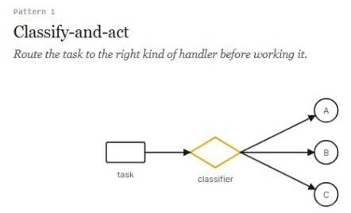

Dois dias. Você usou o Claude no chat para desenhar o negócio e no Cowork para rodar agentes em cima dele. Construiu dois fluxos agênticos funcionais. A pergunta de hoje não é se você consegue usar IA — você já provou que sim. É se você consegue enxergar o que andou fazendo com clareza suficiente para levar de volta ao seu trabalho e reconhecer em qualquer lugar.
Existem seis formatos nomeados para trabalho agêntico, vindos da engenharia da Anthropic. Dois já são seus: você construiu o espalhar-e-sintetizar no Módulo 6 (o fechamento de domingo) e o gerar-e-filtrar no Módulo 7 (o especial da semana). Os outros quatro movimentam organizações como a sua todos os dias: roteiam, verificam, rankeiam, investigam. Hoje você ganha os nomes — e a lente para o seu próprio trabalho.
Os seis padrões agênticos

Quando nenhuma abordagem única serve para toda entrada, você precisa de uma triagem na frente: um classificador lê cada item e o envia ao especialista certo — mais rápido, mais barato e mais preciso do que um generalista tratando tudo. Na banca: triagem das avaliações — elogio ganha agradecimento, reclamação vai para o log de operação, ideia alimenta o gerador do especial da semana. No seu trabalho: triagem de e-mails de suporte (reembolso / feedback de produto / geral); roteamento de propostas para revisor jurídico, financeiro ou técnico conforme o tipo.
A tarefa tem partes independentes; agentes paralelos cuidam de cada uma e uma síntese final monta o retrato completo. Na banca: Caixa + Voz do cliente → recap de domingo. No seu trabalho: o fechamento semanal que junta números, clientes e operação; due diligence com frentes contábil, jurídica e comercial.
Um agente produz; outro, com instrução explícita de desconfiar, procura erros, furos e otimismo indevido antes de a entrega chegar a você. Na banca: antes de imprimir o cardápio novo, um cético confere cada preço contra custos.xlsx e aponta margens irreais. No seu trabalho: revisão de contrato com um agente "advogado do diabo"; conferência de relatório financeiro antes de subir para a diretoria.
Quando qualidade nasce de volume mais critério: geradores produzem candidatos em quantidade, um filtro avalia contra critérios fixos e descarta. Na banca: 12 candidatos a especial → tabela de notas → 1 vencedor. No seu trabalho: nomes de campanha, pautas de conteúdo, abordagens de prospecção — qualquer funil criativo com critério claro.
Variante do gerar-e-filtrar para quando os critérios são difíceis de pontuar isoladamente: os candidatos se enfrentam em pares, e o juiz só precisa decidir "qual destes dois é melhor" — uma pergunta muito mais fácil. Na banca: duas versões do site (Módulo 5) frente a frente: qual faria um cliente novo aparecer domingo? No seu trabalho: dois layouts de proposta comercial, duas versões de pitch — julgadas em confronto direto, não em nota absoluta.
Um agente tenta, testa contra um critério verificável, corrige e tenta de novo — sozinho — até passar ou esgotar as tentativas. Na banca: ajustar o site até carregar bem no celular e passar num checklist de legibilidade. No seu trabalho: conciliação de planilha até zerar as diferenças; qualquer tarefa com um "pronto" objetivamente verificável.
A maioria dos sistemas agênticos que você vai encontrar por aí não é um destes — é dois ou três compostos. A "verificação profunda" da Anthropic é espalhar-e-sintetizar + verificação adversarial. Uma investigação de causa-raiz é espalhar + adversarial + repetir-até-pronto. Reconhecer as peças é como você vai ler qualquer sistema que mostrarem para você como "um fluxo de IA" — e como vai descrever o que quer que construam para o seu time.
Você entrou neste curso sabendo usar IA. Sai sabendo ler: olhar para um sistema agêntico que alguém construiu — ou está te vendendo — e dizer o que ele faz, com nome e sobrenome. Essa é a mudança operacional. O painel de Reflexão ao lado é onde ela vira plano: três perguntas, um PDF para guardar.
— Faça a jogada da pergunta 3 pequena. Não otimize o resto do seu plano; teste só aquela coisa.